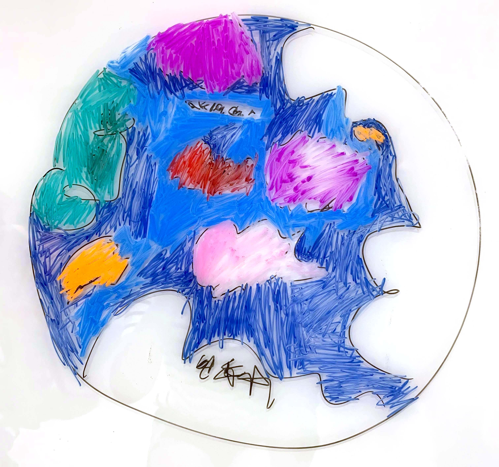

This website is a garden created by Rei’s little auntie in Sep 2021. This is the first time Rei's drawings are shared with the world through the Internet. Rei’s auntie started to plant Rei’s drawings in this garden.
This is a vast garden, but every drawing is planted with a limited resolution of 160*144px.
✿
When I was a kid I was in a rush to grow up and wanted to act like adults. But after I grow up, I enjoy the childishness and willfulness only exsist in the children’s drawings.

This is an alien.
by my niece Joanne

This is the earth.
by my niece Rei
I appreciate such a willful world that only exists in kid’s drawings, where the shadow is absent under the sun and the animals all in rainbow colors. I would never ask for logic or order in them. Because this willfulness is the evidence
of imagination and humor, and I know the willfulness would eventually disappear one day when the kids grow up. Perhaps we all had such experience about realizing the rabbits we draw look the same as others: with four legs sitting on the
ground,long white ears, and a round furry tail, but no longer with a tie or a cup of tea holding in ‘hands’.

We would eventually become the grown-ups in the
little prince that
could only see “the hat” in his Drawing Number One.

I wouldn’t like to see my niece rush to become a boring grown-up who only follow the norms and orders of the
world.
So when my sister sent me the drawings of my niece and I started to think about making an online archive for them. I decided to create a website as a garden where we can willfully plant her drawings. The garden can grow day by day with
her, and
this space could be free from any rules or layouts in the shared online archive space such as Google drive or Dropbox. I feel like by putting them in their own quiet space without being dependent on today’s mainstream social networks,
the
willful aura in children’s drawings is best presented.
Since this is the first time Rei's drawings are shared with the world through the Internet, I tried hard to make everything right. Without a second thought, I asked my sister to take good photos of each drawing and send the original
file
to me
to start creating the archive. I spent most of my time thinking about how to design a unique layout for this virtual garden. But
later, I started to think about if good-quality photography images are the best way to display these drawings to the world. So far, I naturally adapt the taste of the grown-ups about the image: good images should be clear and in high
resolution
especially in the digital era full of 4k. However, I totally ignored how this kind of rich images anchored in systems of orders and conservative structure, which I meant to avoid when I created this website. I realized if I use the rich
images
as a format to present the drawings, no matter how free the layout is, the aura in the drawings is still restricted and degraded in such format.
“ Grown-ups love figures. When you tell them that you have made a new friend, they never ask you any questions about essential matters. They never say to you ‘’What does his voice sound like? What games does he love
best?
Does he collect
butterflies?” Instead, they demand: “How old is he? how many brothers has he? How much does he weigh? How much money does his father make?” Only from these figures do they think they have learned anything about him. “
— The Little Prince
The willful aura in my niece’s drawings doesn’t depend on the high resolutions or new technology. The lack of amount in poor image does not degrade the aura, but best present them.
“It is only with the heart that one can see rightly; what is essential is invisible to the eye.”
— The Little Prince
Perhaps there's no way I can best present Rei's drawings on this website. The best perception of the aura of all the drawings are only preserved at Rei’s home, and in the heart of Rei’s beloved family that drew with her.